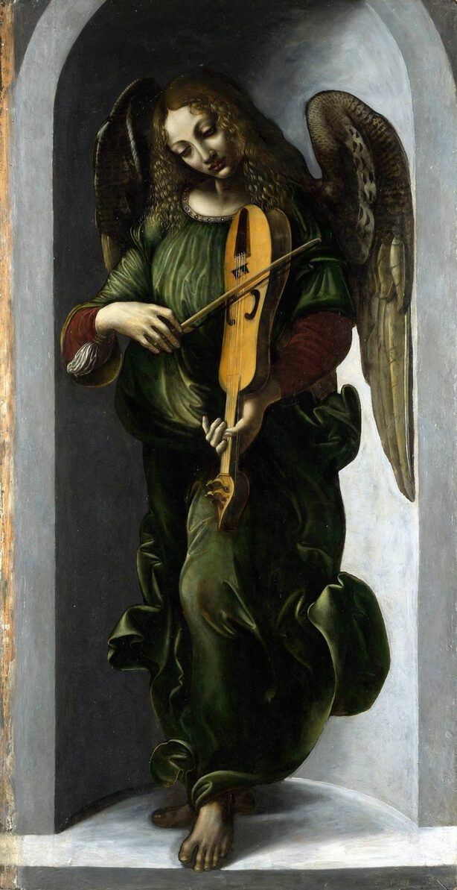

Leonardo da Vinci,1452 - 1519,High Renaissance,Italian,"Leonardo di ser Piero da Vinci (Italian: [leoˈnardo di ˌsɛr ˈpjɛːro da (v)ˈvintʃi] (listen); 15 April 1452 – 2 May 1519), more commonly Leonardo da Vinci or simply Leonardo, was an Italian polymath of the Renaissance whose areas of interest included invention, drawing, painting, sculpting, architecture, science, music, mathematics, engineering, literature, anatomy, geology, astronomy, botany, writing, history, and cartography. He has been variously called the father of palaeontology, ichnology, and architecture, and he is widely considered one of the greatest painters of all time. Sometimes credited with the inventions of the parachute, helicopter, and tank, he epitomised the Renaissance humanist ideal.",http://en.wikipedia.org/wiki/Leonardo_da_Vinci,143
